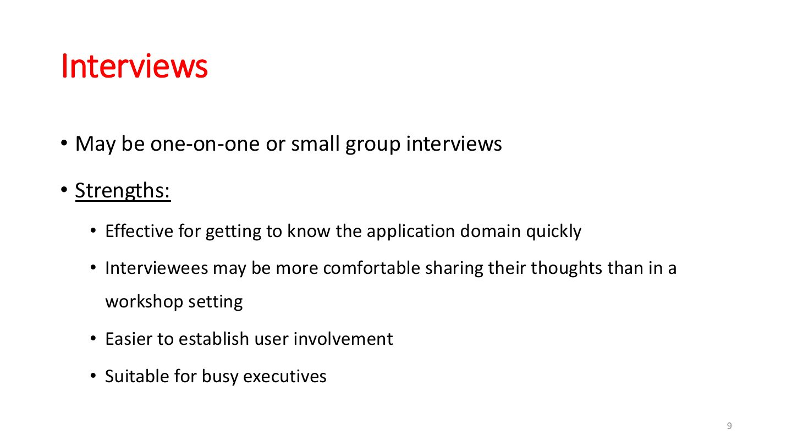
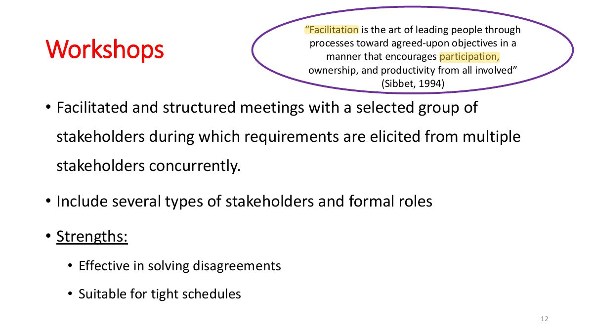
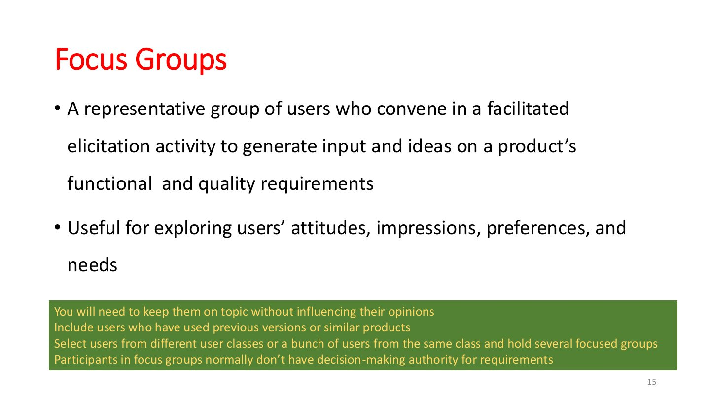
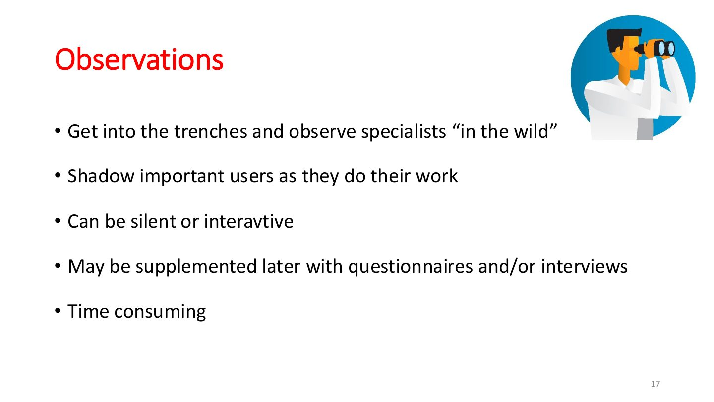
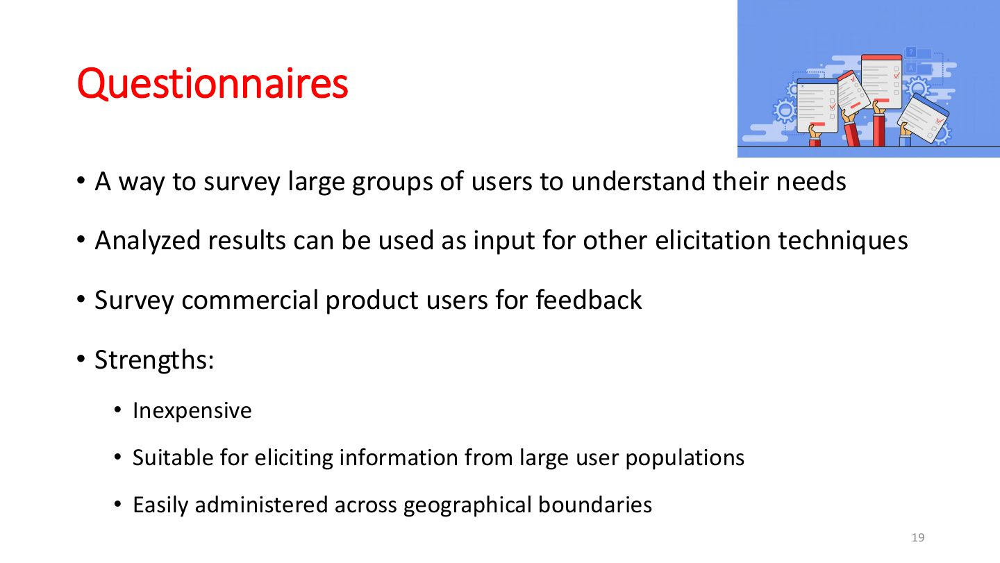
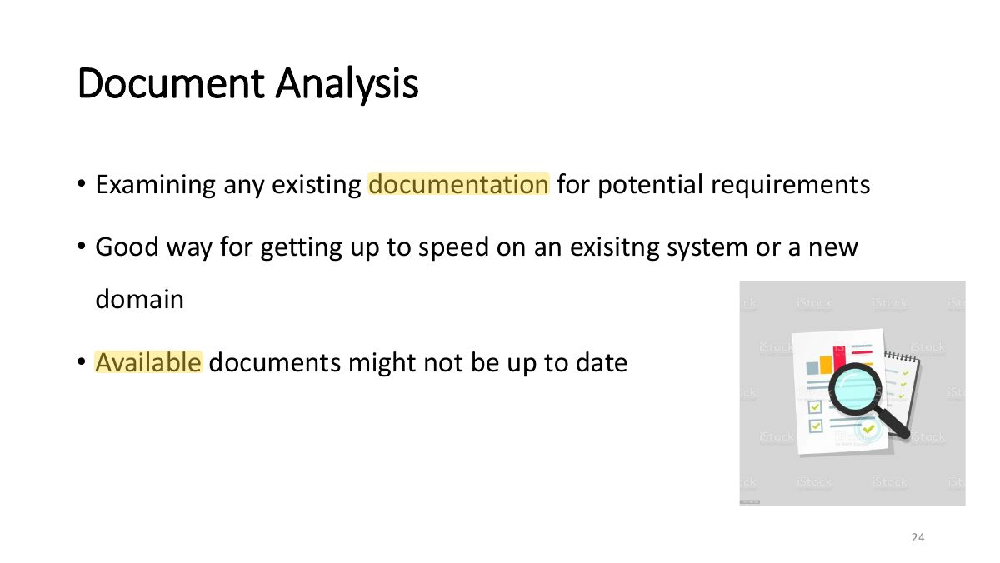
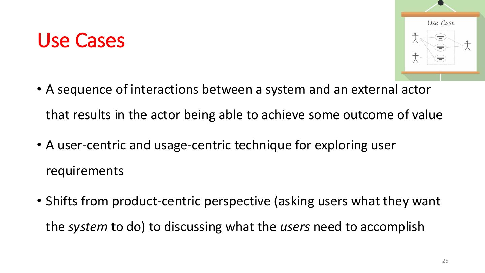
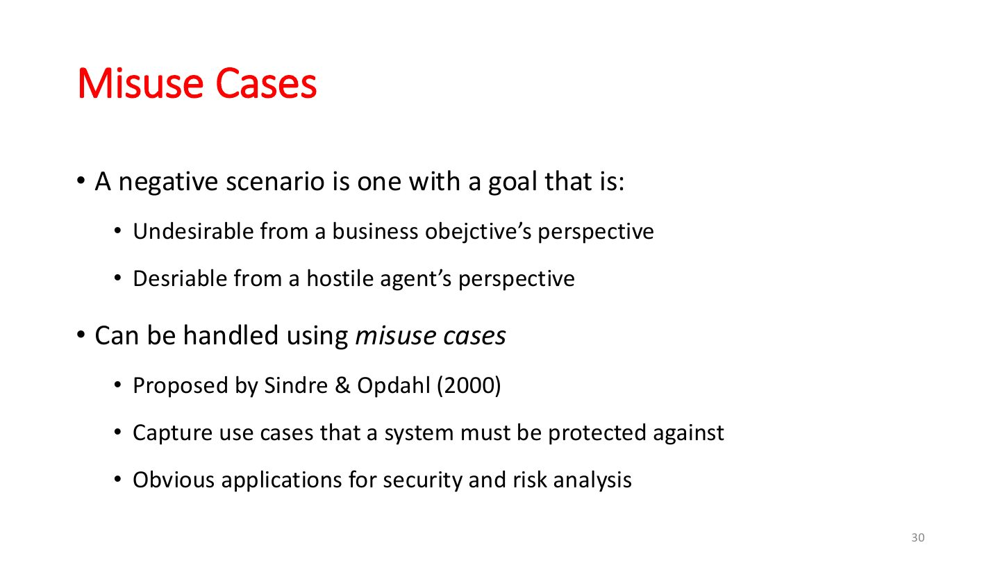
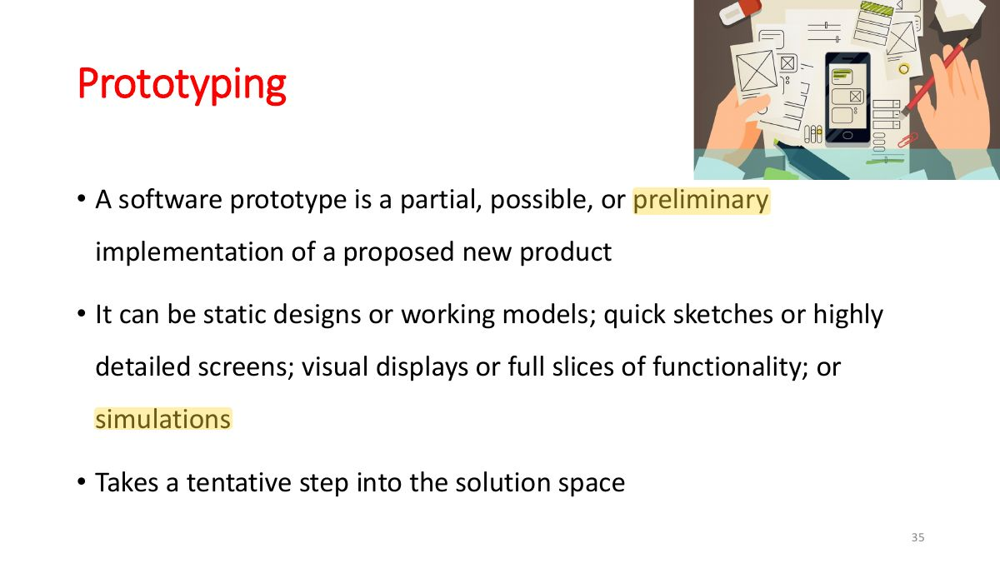

Q9: exploring attitudes and preferences
Requirements Elicitation Techniques
Interviews, workshops, focus groups, observation, questionnaires, system- and user-interface analysis, document analysis, use cases and usage scenarios, misuse cases, and prototyping (purpose, fidelity, risks and success factors), with a comparison of techniques.
How to read this page
Every original slide is shown unchanged. Yellow marks on a slide point to a numbered note: hover or tap a mark to jump to its note, and hover a note to see its marks. Questions tagged Past exam appeared on a real paper; Prediction questions are likely angles, not confirmed. Pick an answer to each question: a wrong pick tells you why it is wrong, so you can try again.
All 53 slides
- 1 Slide 1
- 2 Outline
- 3 RE Process
- 4 Requirements Elicitation
- 5 Requirements Elicitation
- 6 Requirements Elicitation Goals
- 7 Requirements Elicitation
- 8 Requirements Elicitation Techniques
- 9 Interviews
- 10 Interviews - Tips
- 11 Interviews - Tips
- 12 “Facilitation is the art of leading people through
- 13 Workshops - Tips
- 14 Workshops - Tips
- 15 Focus Groups
- 16 Focus Groups
- 17 Observations
- 18 Observations
- 19 Questionnaires
- 20 Questionnaires – Tips
- 21 System Interface Analysis
- 22 User Interface Analysis
- 23 User Interface Analysis
- 24 Document Analysis
- 25 Use Cases
- 26 Usage Scenario
- 27 Representation of Use Cases - Textual
- 28 Representation of Use Cases – Visual
- 29 Use Cases
- 30 Misuse Cases
- 31 Agents with intentions to harm
- 32 Misuse Cases
- 33 Block
- 34 Misuse Cases
- 35 Prototyping
- 36 Prototyping - Purpose
- 37 Prototyping – Attributes & Applications
- 38 Slide 38
- 39 Prototyping – Fidelity
- 40 Prototyping
- 41 Prototyping - Risks
- 42 Prototyping – Success Factors
- 43 Final Remarks
- 44 Appendix I – Sample Elicitation Questions
- 45 Appendix I – Sample Elicitation Questions
- 46 Appendix I – Sample Elicitation Questions
- 47 Appendix I – Sample Elicitation Questions
- 48 Appendix I – Sample Elicitation Questions
- 49 Appendix I – Sample Elicitation Questions
- 50 Appendix I – Sample Elicitation Questions
- 51 Appendix II – Comparison of Elicitation Techniques
- 52 Appendix II – Comparison of Elicitation Techniques
- 53 Appendix III – Prototyping Tools
Interviews

Notes
-
Interviews: one-on-one or small group; good for detail. Prepare questions, stay in scope, listen, take notes.
“Facilitation is the art of leading people through

Notes
-
Workshops: structured, facilitated sessions with many stakeholders to resolve conflicts and define requirements fast.
Focus Groups

Notes
-
Focus groups: representative users discussing attitudes, impressions, preferences and needs: suited to COMMERCIAL products.
Exam angle
Best technique for exploring users’ attitudes, impressions and preferences for a commercial product:
Observations

Notes
-
Observation: watch users do their real work; reveals tacit steps they forget to mention. Silent or interactive.
Exam angle
Users can’t explain a complex task they do automatically. Best technique:
Questionnaires

Notes
-
Questionnaires: reach many users cheaply; hard to write well; no follow-up.
Document Analysis

Notes
-
Document analysis: existing documentation, regulations, manuals, reports.
Use Cases

Notes
-
Use case: a goal-oriented interaction between an actor and the system (normal flow, alternatives, exceptions).
Misuse Cases

Notes
-
Misuse case: what an attacker (or careless user) wants to do; reveals security requirements.
Exam angle
Misuse cases help discover mainly:
Prototyping

Notes
-
Prototype: a partial implementation to clarify requirements. Throwaway vs. evolutionary; low fidelity (paper) vs. high fidelity (looks real).
-
Trap Risk: stakeholders see a polished prototype and think the system is nearly done.
Exam angle
A paper sketch of screens is a: